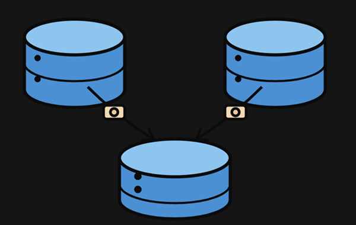

In this project, I loaded and explored raw retail sales data (checked nulls, duplicates, categorical consistency).I prepared the dataset by standardizing column names, fixing a real data quality bug where postal codes lost their leading zeros, correcting date parsing, and engineering new features like profit margin and order-to-ship time.
View Project

Working in SQL Server, I designed a normalized database schema (Customers, Products, Orders) built from a single flat table. I wrote queries covering filtering, aggregation, JOINs, subqueries, and window functions, debugged a real BULK INSERT issue and invisible characters in column names, and built reusable views for Power BI.
To bring the analysis to life, I connected Power BI directly to SQL Server and built an interactive sales dashboard with KPI cards, regional and category breakdowns, and time-trend visuals. I wrote DAX measures for sales, profit, and month-over-month growth, and debugged real chart issues around date granularity and sorting along the way.